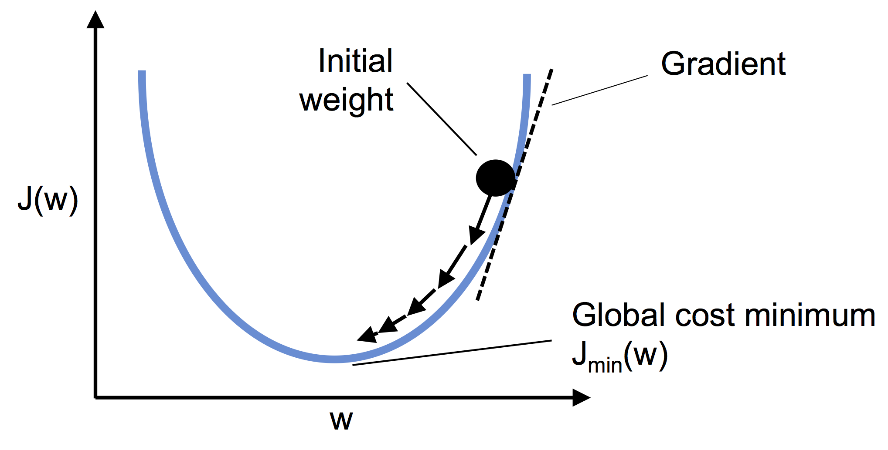

from IPython.display import ImageBudowa klasy dla algorytmu błądzenia losowego, Perceprtonu i Adeline.
Modelowanie
Na poprzednich zajęciach omawialiśmy wykorzystanie modelu regresji liniowej dla danych ustrukturyzowanych. W najprostszym przypadku dla jednej zmiennej X i jednej zmiennej celu moglibyśmy np. przypisać model w postaci:
satysfakcja_z_zycia = \(\alpha_0\) + \(\alpha_1\) PKB_per_capita
\(\alpha_0\) nazywamy punktem odcięcia (intercept) albo punktem obciążenia (bias)
import numpy as np
np.random.seed(42)
m = 100
X = 2*np.random.rand(m,1)
a_0, a_1 = 4, 3
y = a_0 + a_1 * X + np.random.randn(m,1) import matplotlib.pyplot as plt
plt.scatter(X, y)
plt.show()W ogólności model liniowy: \(\hat{y} = \alpha_0 + \alpha_1 x_1 + \alpha_2 x_2 + \dots + \alpha_n x_n\) gdzie \(\hat{y}\) to predykcja naszego modelu (wartość prognozowana), dla \(n\) cech przy wartościach cechy \(x_i\).
W postaci zwektoryzowanej możemy napisać: \(\hat{y} = \vec{\alpha}^{T} \vec{x}\)
W tej postaci widać dlaczego w tym modelu dokłada się kolumnę jedynek - wynikają one z wartości \(x_0\) dla \(\alpha_0\).
# dodajmy jedynkę do naszej tabeli
from sklearn.preprocessing import add_dummy_feature
X_b = add_dummy_feature(X)Powiedzieliśmy, że możemy w tym modelu znaleźć funkcję kosztu
\(MSE(\vec{x}, \hat{y}) = \sum_{i=1}^{m} \left( \vec{\alpha}^{T} \vec{x}^{(i)} - y^{(i)} \right)^{2}\)
Tak naprawdę możemy \(MSE(\vec{x}, \hat{y}) = MSE(\vec{\alpha})\)
Rozwiązanie analityczne: \(\vec{\alpha} = (X^{T}X)^{-1} X^T y\)
# rozwiązanie analityczne
alpha_best = np.linalg.inv(X_b.T @ X_b) @ X_b.T @ yalpha_best, np.array([4,3])(array([[4.21509616],
[2.77011339]]),
array([4, 3]))X_new = np.array([[0],[2]])
X_new_b = add_dummy_feature(X_new)
y_predict = X_new_b @ alpha_best
import matplotlib.pyplot as plt
plt.plot(X_new, y_predict, "r-", label="prediction")
plt.plot(X,y, "b.")
plt.show()from sklearn.linear_model import LinearRegression
lin_reg = LinearRegression()
lin_reg.fit(X,y)
print(f"a_0={lin_reg.intercept_[0]}, a_1 = {lin_reg.coef_[0][0]}")
print("predykcja", lin_reg.predict(X_new))a_0=4.215096157546746, a_1 = 2.770113386438484
predykcja [[4.21509616]
[9.75532293]]# Logistic Regression w scikit learn oparta jest o metodę lstsq
alpha_best_svd, _, _, _ = np.linalg.lstsq(X_b, y, rcond=1e-6)
alpha_best_svdarray([[4.21509616],
[2.77011339]])Gradient prosty
Pamiętaj o standaryzacji zmiennych (aby były one reprezentowane w tej samej skali).
Wsadowy gradient prosty
W celu implementacji musimy policzyć pochodne cząstkowe dla funkcji kosztu wobec każdego parametru \(\alpha_i\).
\(\frac{\partial}{\partial \alpha_j}MSE(\vec{x}, \hat{y}) = 2 \sum_{i=1}^{m} \left( \vec{\alpha}^{T} \vec{x}^{(i)} - y^{(i)} \right) x_j^{(i)}\)
Komputery posiadają własność mnożenia macierzy co pozwala obliczyć nam wszystkie pochodne w jednym obliczeniu. Wzór i algorytm liczący wszystkie pochodne “na raz” wykorzystuje cały zbiór X dlatego też nazywamy go wsadowym.
Po obliczeniu gradientu po prostu idziemy “w przeciwną stronę”
$ {next} = - {} MSE()$
Image(filename='./img/02_10.png', width=500) 
eta = 0.1
n_epochs = 1000
m = len(X_b)
np.random.seed(42)
alpha = np.random.randn(2,1) # losowo wybieramy rozwiązanie
for epoch in range(n_epochs):
gradients = 2/m* X_b.T @ (X_b @ alpha - y)
#print(alpha)
alpha = alpha - eta*gradientsalphaarray([[4.21509616],
[2.77011339]])sprawdz jak wygladają wyniki dla różnych eta dla 0.02, 0.1, 0.5
Stochastic gradient descent
Jednym z poważniejszych problemów wsadowego gradientu jest jego zależność od wykorzystania (w każdym kroku) całej macierzy danych. Korzystając z własności statystycznych możemy zobaczyć jak będzie realizowała się zbieżność rozwiązania jeśli za każdym razem wylosujemy próbkę danych i na niej określimy gradient. Ze względu, iż w pamięci przechowujemy tylko pewną porcję danych algorytm ten może być używany dla bardzo dużych zbiorów danych. Warto jednak mieć świadomość, że tak otrzymane wyniki mają charakter chaotyczny, co oznacza, że funkcja kosztu nie zbiega się w kierunku minimum lecz przeskakuje dążąc do minimun w sensie średniej.
n_epochs = 50
m = len(X_b)
def learning_schedule(t, t0=5, t1=50):
return t0/(t+t1)
np.random.seed(42)
alpha = np.random.randn(2,1)
for epoch in range(n_epochs):
for iteration in range(m):
random_index = np.random.randint(m)
xi = X_b[random_index : random_index + 1]
yi = y[random_index : random_index + 1]
gradients = 2 * xi.T @ (xi @ alpha - yi)
eta = learning_schedule(epoch * m + iteration)
alpha = alpha - eta * gradients
alphaarray([[4.21076011],
[2.74856079]])from sklearn.linear_model import SGDRegressor
sgd_reg = SGDRegressor(max_iter=1000, tol=1e-5,
penalty=None, eta0=0.01,
n_iter_no_change=100, random_state=42)
sgd_reg.fit(X, y.ravel())SGDRegressor(n_iter_no_change=100, penalty=None, random_state=42, tol=1e-05)In a Jupyter environment, please rerun this cell to show the HTML representation or trust the notebook.
On GitHub, the HTML representation is unable to render, please try loading this page with nbviewer.org.
SGDRegressor(n_iter_no_change=100, penalty=None, random_state=42, tol=1e-05)
sgd_reg.intercept_, sgd_reg.coef_(array([4.21278812]), array([2.77270267]))Podstawy OOP dla języka Python
from random import randint
class Kosc():
"""opis"""
def __init__(self, sciany=6):
""" ops metody """
self.sciany = sciany
def roll(self):
"""opis metody """
return randint(1,self.sciany)
a = Kosc()
[a.roll() for _ in range(10)][5, 4, 3, 6, 3, 2, 2, 3, 3, 1]from random import choice
class RandomWalk():
def __init__(self, num_points=5000):
self.num_points = num_points
self.x_values = [0]
self.y_values = [0]
def fill_walk(self):
while len(self.x_values) < self.num_points:
x_direction = choice([-1,1])
x_distance = choice([0,1,2,3,4])
x_step = x_direction*x_distance
y_direction = choice([-1,1])
y_distance = choice([0,1,2,3,4])
y_step = y_direction*y_distance
if x_step == 0 and y_step == 0:
continue
next_x = self.x_values[-1] + x_step
next_y = self.y_values[-1] + y_step
self.x_values.append(next_x)
self.y_values.append(next_y)
rw = RandomWalk()
rw.x_values
rw2 = RandomWalk(num_points=10000)
rw2.num_points
rw.fill_walk()import matplotlib.pyplot as plt
point_number = list(range(rw.num_points))
plt.scatter(rw.x_values, rw.y_values, c=point_number, cmap=plt.cm.Blues,
edgecolor='none', s=15)
plt.scatter(0,0,c='green', edgecolor='none', s=100)
plt.scatter(rw.x_values[-1], rw.y_values[-1],c='red', edgecolor='none', s=100)
plt.show()Sztuczne neurony - rys historyczny
W 1943 roku W. McCulloch i W. Pitts zaprezentowali pierwszą koncepcję uproszczonego modelu komórki nerwowej tzw. Nuronu McCulloch-Pittsa (MCP). W.S. McCulloch, W. Pitts, A logical Calculus of the Ideas Immanent in Nervous Activity. “The Bulletin of Mathematical Biophysics” 1943 nr 5(4)
Neuronami nazywamy wzajemnie połączone komórki nerwowe w mózgu, które są odpowiedzialne za przetwarzanie i przesyłanie sygnałów chemicznych i elektrycznych. Komórka taka opisana jest jako bramka logiczna zawierająca binarne wyjścia. Do dendrytów dociera duża liczba sygnałów, które są integrowane w ciele komórki i (jeżeli energia przekracza określoną wartość progową) zostaje wygenerowany sygnał wyjściowy przepuszczany przez akson.
Image(filename='./img/02_01.png', width=800) 
Po kilku latach Frank Rosenblatt (na podstawie MCP) zaproponował pierwszą koncepcję reguły uczenia perceprtonu. F. Rosenblatt, The Perceptron, a Perceiving and Recognizing Automaton, Cornell Aeronautical Laboratory, 1957
Image(filename='./img/02_04.png', width=800) 
Image(filename='./img/02_02.png', width=800) 
import numpy as np
import pandas as pd
from sklearn.datasets import load_iris
iris = load_iris()
df = pd.DataFrame(data= np.c_[iris['data'], iris['target']],
columns= iris['feature_names'] + ['target'])X = df.iloc[:100,[0,2]].values
y = df.iloc[0:100,4].values
y = np.where(y == 0, -1, 1)
import matplotlib.pyplot as pltplt.scatter(X[:50,0],X[:50,1],color='red', marker='o',label='setosa')
plt.scatter(X[50:100,0],X[50:100,1],color='blue', marker='x',label='versicolor')
plt.xlabel('sepal length (cm)')
plt.ylabel('petal length (cm)')
plt.legend(loc='upper left')
plt.show()dziecko = Perceptron()
dziecko.fit()
# dziecko musi mieć parametr uczenia
dziecko.eta
# możemy sprawdzić jak szybko się uczy == ile błędów robi
dziecko.errors_
# rozwiązania znajdą się w wagach
dziecko.w_
# w naszym przypadku dziecko uczy się dwóch wag !
class Perceptron():
def __init__(self, n_iter=10, eta=0.01):
self.n_iter = n_iter
self.eta = eta
def fit(self, X, y):
self.w_ = np.zeros(1+X.shape[1])
self.errors_ = []
for _ in range(self.n_iter):
pass
return selfimport random
class Perceptron():
def __init__(self, eta=0.01, n_iter=10):
self.eta = eta
self.n_iter = n_iter
def fit(self, X, y):
#self.w_ = np.zeros(1+X.shape[1])
self.w_ = [random.uniform(-1.0, 1.0) for _ in range(1+X.shape[1])]
self.errors_ = []
for _ in range(self.n_iter):
errors = 0
for xi, target in zip(X,y):
#print(xi, target)
update = self.eta*(target-self.predict(xi))
#print(update)
self.w_[1:] += update*xi
self.w_[0] += update
#print(self.w_)
errors += int(update != 0.0)
self.errors_.append(errors)
return self
def net_input(self, X):
return np.dot(X, self.w_[1:])+self.w_[0]
def predict(self, X):
return np.where(self.net_input(X)>=0.0, 1, -1)# uzycie jak wszsytkie klasy sklearn
ppn = Perceptron()
ppn.fit(X,y)<__main__.Perceptron at 0xffff584a6e50>print(ppn.errors_)
print(ppn.w_)[7, 5, 5, 5, 4, 2, 3, 2, 3, 1]
[-0.004915667492470639, -0.08431647234956788, 0.17845900873492573]ppn.predict(np.array([-3, 5]))array(1)# dodatkowa funkcja
from matplotlib.colors import ListedColormap
def plot_decision_regions(X,y,classifier, resolution=0.02):
markers = ('s','x','o','^','v')
colors = ('red','blue','lightgreen','gray','cyan')
cmap = ListedColormap(colors[:len(np.unique(y))])
x1_min, x1_max = X[:,0].min() - 1, X[:,0].max()+1
x2_min, x2_max = X[:,1].min() -1, X[:,1].max()+1
xx1, xx2 = np.meshgrid(np.arange(x1_min, x1_max, resolution),
np.arange(x2_min, x2_max, resolution))
Z = classifier.predict(np.array([xx1.ravel(), xx2.ravel()]).T)
Z = Z.reshape(xx1.shape)
plt.contourf(xx1, xx2, Z, alpha=0.4, cmap=cmap)
plt.xlim(xx1.min(), xx1.max())
plt.ylim(xx2.min(),xx2.max())
for idx, cl in enumerate(np.unique(y)):
plt.scatter(x=X[y == cl,0], y=X[y==cl,1], alpha=0.8, c=cmap(idx), marker=markers[idx], label=cl)
# dla kwiatkówplot_decision_regions(X,y,classifier=ppn)
plt.xlabel("dlugosc dzialki [cm]")
plt.ylabel("dlugosc platka [cm]")
plt.legend(loc='upper left')
plt.show()/tmp/ipykernel_47975/2939353802.py:21: UserWarning: *c* argument looks like a single numeric RGB or RGBA sequence, which should be avoided as value-mapping will have precedence in case its length matches with *x* & *y*. Please use the *color* keyword-argument or provide a 2D array with a single row if you intend to specify the same RGB or RGBA value for all points.
plt.scatter(x=X[y == cl,0], y=X[y==cl,1], alpha=0.8, c=cmap(idx), marker=markers[idx], label=cl)Image(filename='./img/02_09.png', width=600) 
# ZADANIE - Opisz czym różni się poniższy algorytm od Perceprtona ?
class Adaline():
'''Klasyfikator - ADAptacyjny LIniowy NEuron'''
def __init__(self, eta=0.01, n_iter=10):
self.eta = eta
self.n_iter = n_iter
def fit(self, X,y):
#self.w_ = np.zeros(1+X.shape[1])
import random
self.w_ = [random.uniform(-1.0, 1.0) for _ in range(1+X.shape[1])]
self.cost_ = []
for i in range(self.n_iter):
net_input = self.net_input(X)
output = self.activation(X)
errors = (y-output)
self.w_[1:] += self.eta * X.T.dot(errors)
self.w_[0] += self.eta * errors.sum()
cost = (errors**2).sum() / 2.0
self.cost_.append(cost)
return self
def net_input(self, X):
return np.dot(X, self.w_[1:]) + self.w_[0]
def activation(self, X):
return self.net_input(X)
def predict(self, X):
return np.where(self.activation(X) >= 0.0, 1, -1) ad = Adaline(n_iter=20, eta=0.01)
ad.fit(X,y)
print(ad.w_)
plot_decision_regions(X,y,classifier=ad)
plt.xlabel("dlugosc dzialki [cm]")
plt.ylabel("dlugosc platka [cm]")
plt.legend(loc='upper left')
plt.show()[-7.455249717834115e+29, -4.1637224208297825e+30, -2.329539601257149e+30]/tmp/ipykernel_47975/2939353802.py:21: UserWarning: *c* argument looks like a single numeric RGB or RGBA sequence, which should be avoided as value-mapping will have precedence in case its length matches with *x* & *y*. Please use the *color* keyword-argument or provide a 2D array with a single row if you intend to specify the same RGB or RGBA value for all points.
plt.scatter(x=X[y == cl,0], y=X[y==cl,1], alpha=0.8, c=cmap(idx), marker=markers[idx], label=cl)ad.cost_[:10][140.08713411457336,
10130.555141038189,
15796202.248846438,
24639830805.940037,
38434640654686.06,
5.995258709511885e+16,
9.351753101299814e+19,
1.4587408201236906e+23,
2.275428742873221e+26,
3.5493460472673884e+29]ad2 = Adaline(n_iter=100, eta=0.0001)
ad2.fit(X,y)
plot_decision_regions(X,y,classifier=ad2)
plt.xlabel("dlugosc dzialki [cm]")
plt.ylabel("dlugosc platka [cm]")
plt.legend(loc='upper left')
plt.show()/tmp/ipykernel_47975/2939353802.py:21: UserWarning: *c* argument looks like a single numeric RGB or RGBA sequence, which should be avoided as value-mapping will have precedence in case its length matches with *x* & *y*. Please use the *color* keyword-argument or provide a 2D array with a single row if you intend to specify the same RGB or RGBA value for all points.
plt.scatter(x=X[y == cl,0], y=X[y==cl,1], alpha=0.8, c=cmap(idx), marker=markers[idx], label=cl)print(ad2.w_)
ad2.cost_[-10:][-0.8997065712259897, 0.009396352215446133, 0.3262108547290658][18.84904336445426,
18.48924749328044,
18.137348502663738,
17.793173068484943,
17.456551670817138,
17.12731851042961,
16.805311427124423,
16.490371819865356,
16.182344568659914,
15.881077958155881]%%file app.py
import pickle
from math import log10
from flask import Flask
from flask import request
from flask import jsonify
import numpy as np
class Perceptron():
def __init__(self, eta=0.01, n_iter=10):
self.eta = eta
self.n_iter = n_iter
def fit(self, X, y):
self.w_ = [random.uniform(-1.0, 1.0) for _ in range(1+X.shape[1])]
self.errors_ = []
for _ in range(self.n_iter):
errors = 0
for xi, target in zip(X,y):
update = self.eta*(target-self.predict(xi))
self.w_[1:] += update*xi
self.w_[0] += update
errors += int(update != 0.0)
self.errors_.append(errors)
return self
def net_input(self, X):
return np.dot(X, self.w_[1:])+self.w_[0]
def predict(self, X):
return np.where(self.net_input(X)>=0.0, 1, -1)
# Create a flask
app = Flask(__name__)
# Create an API end point
@app.route('/api/v1.0/predict', methods=['GET'])
def get_prediction():
# sepal length
sepal_length = float(request.args.get('sl'))
petal_length = float(request.args.get('pl'))
features = [sepal_length, petal_length]
# Load pickled model file
with open('model.pkl',"rb") as picklefile:
model = pickle.load(picklefile)
# Predict the class using the model
predicted_class = int(model.predict(features))
# Return a json object containing the features and prediction
return jsonify(features=features, predicted_class=predicted_class)
if __name__ == '__main__':
app.run(host='0.0.0.0', port=5000)import requests
response = requests.get("http://127.0.0.1:5000/api/v1.0/predict?sl=6.3&pl=2.6")
print(response.content)